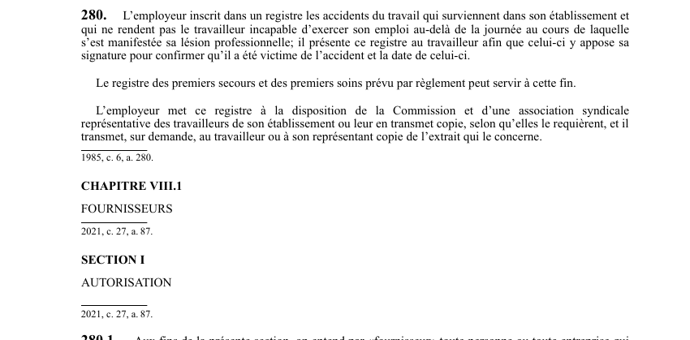

art-280-LATMP : employeur inscrit registre accidents
Un article du wiki ⚖️ Recueil législatif
En bref
L'employeur inscrit dans un registre les accidents du travail qui surviennent dans son établissement.
🌐 LegisQuébec · 📄 PDF officiel (page 69)
Texte officiel : capture du PDF
{kind=link}

Toucher l'image pour l'agrandir🔗 Ouvrir a cette page : LATMP.pdf : page 69 · texte a jour au 20 février 2024
Voir aussi
- 🔢 Sous-article : art. 280.1 · définition : aux fins de la présente section, on entend par «fournisseur» toute personne ou toute entreprise qui fourit a un bénéficiaire directement ou indirectement des biens ou services visés 4 la présente loi.
- 🔢 Sous-article : art. 280.2 · la personne ou l'entreprise qui souhaite obtenir une autorisation de la CNESST dans le cadre du régime intérimaire lui présente une demande, conformément aux conditions prévues par règlement.
- 🔢 Sous-article : art. 280.3 · la CNESST refuse d'accorder une autorisation à une personne ou à une entreprise si celle-ci ne satisfait pas aux conditions prévues par règlement.
- 🔢 Sous-article : art. 280.4 · faculté : avant de refuser d'accorder une autorisation, la CNESST peut demander à la personne ou à l'entreprise d'apporter les correctifs nécessaires à sa demande, dans le délai qu'elle indique.
- 🔢 Sous-article : art. 280.5 · une autorisation demeure valide jusqu'à ce qu'elle soit révoquée ou annulée à la demande du fournisseur.
- 🔢 Sous-article : art. 280.6 · disposition pénale : la CNESST suspend l'autorisation si le fournisseur ne respecte pas les conditions réglementaires.
- 🔢 Sous-article : art. 280.7 · la CNESST révoque l'autorisation d'un fournisseur qui, au cours des cinq dernières années, a fait l'objet de deux suspensions et qui est à nouveau en défaut de respecter les conditions prévues par règlement.
- 🔢 Sous-article : art. 280.8 · faculté : le fournisseur qui s'est vu révoquer son autorisation ne peut présenter une nouvelle demande d'autorisation dans les cinq ans suivant la date de la révocation.
- 🔢 Sous-article : art. 280.9 · procédure : avant de refuser d'accorder, de suspendre ou de révoquer une autorisation, la CNESST notifie au fournisseur un préavis et lui accorde un délai pour présenter ses observations.
- 🔢 Sous-article : art. 280.10 · procédure : à l'expiration du délai prévu à l'art.
- 🔢 Sous-article : art. 280.11 · - Malgré l'article 358, les décisions de la Commission prises en vertu de la présente section sont ales et sans appel.
- 🔢 Sous-article : art. 280.12 · faculté : définitions.
- 🔢 Sous-article : art. 280.13 · droit : un fournisseur ne peut exiger ou recevoir un paiement de la CNESST pour un bien ou un service auquel un bénéficiaire a droit lorsque le bien ou service n'a pas été fourni (ou pas conformément aux tarifs et conditions prévus), ou lorsqu'il est faussement décrit.
- 🔢 Sous-article : art. 280.14 · procédure : lorsque commission avis qu.
- 🔢 Sous-article : art. 280.15 · indemnité décès.
- 🔢 Sous-article : art. 280.16 · définition : aux fins de la présente section, on entend par «fournisseur» toute personne ou toute entreprise qui fournit a un bénéficiaire directement ou indirectement des biens.
- 🔢 Sous-article : art. 280.17 · faculté : la CNESST peut autoriser toute personne à agir comme vérificateur pour vérifier l'application de la loi par un fournisseur.
- 🔢 Sous-article : art. 280.18 · faculté : dans l'exercice de ses fonctions, un vérificateur peut pénétrer à toute heure raisonnable dans tout lieu d'activité visé par la loi, exiger tout renseignement et la communication de tout document pour examen ou reproduction, et représenter ou reproduire les lieux et les biens.
- 🔢 Sous-article : art. 280.19 · interdiction : demande personne qui procède.
- 🔢 Sous-article : art. 280.20 · interdiction : lors d'une vérification, nul ne peut refuser de communiquer à la CNESST un renseignement ou document du dossier d'un bénéficiaire, ni un renseignement ou document à caractère financier concernant les activités d'un fournisseur.
- 🔢 Sous-article : art. 280.21 · faculté : un vérificateur peut adresser à quiconque les recommandations qu'il juge convenables.
- 🔢 Sous-article : art. 280.22 · interdiction : un vérificateur ne peut être poursuivi en justice pour une omission ou un acte accompli de bonne foi dans l'exercice de ses fonctions.
- 🔧 Modifié par : LMRSST art. 87 · insère une nouvelle disposition dans la LATMP.
- ↑ Loi : LATMP
Pages qui pointent ici (2)
- art-87-LMRSST : insertion après art. 280 LATMP Recueil législatif
- LMRSST : Chapitre I : Modifications à la LATMP Recueil législatif